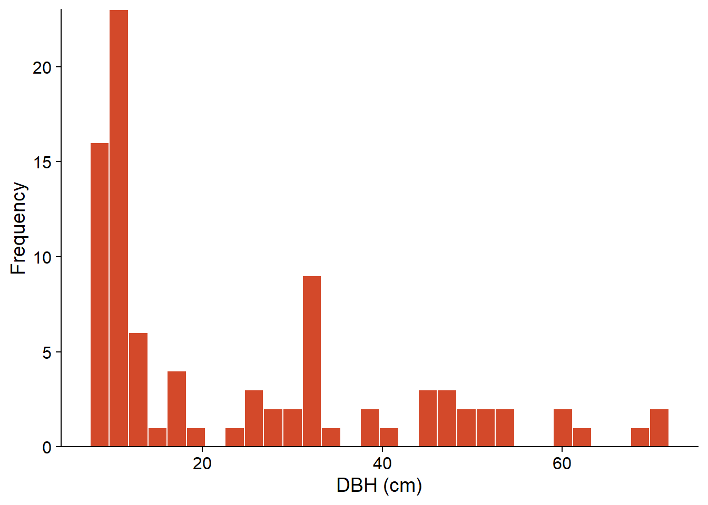
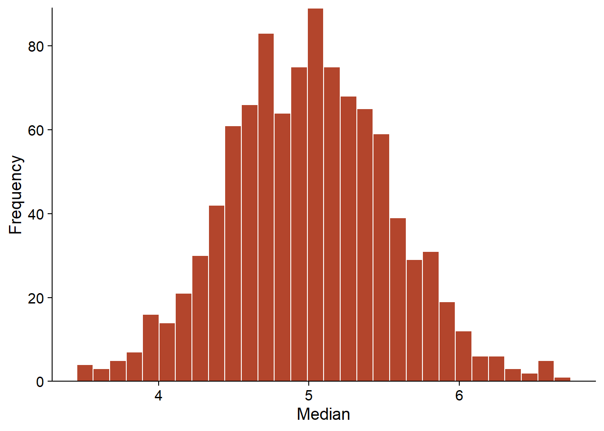
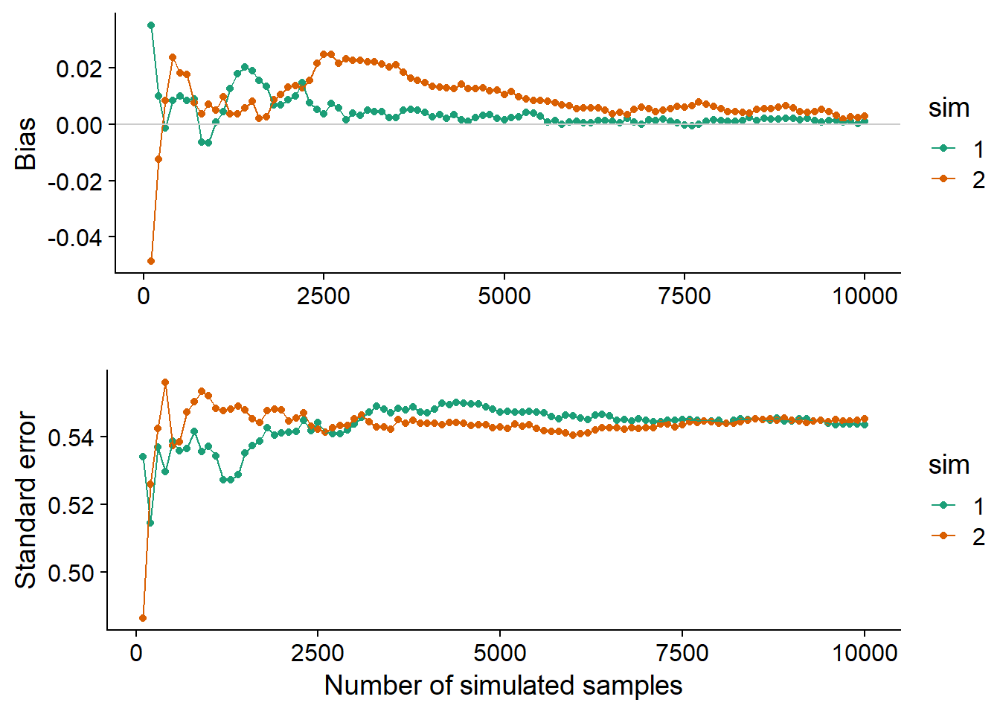
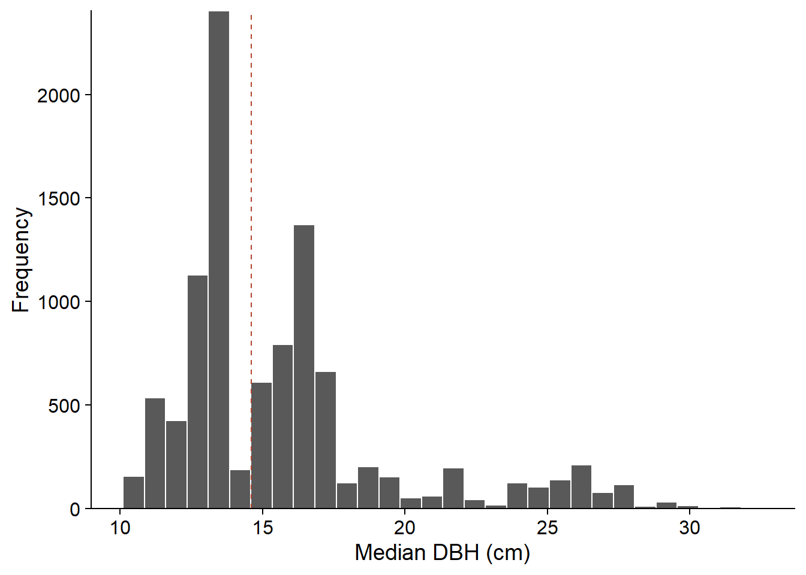

The bootstrap method
Introduction
Statistical inference aims to obtain knowledge about a population (any set of entities) from variables measured in a sample of that population. For example, suppose we want to determine the mean age of trees in a forest (a parameter of the population) from the mean age of 30 randomly selected individuals (a statistic). For some statistics, theory allows us to directly obtain the estimate along with its margin of error: for example, we know that the mean of a sample follows an approximately normal distribution centered on the mean of the population.
However, we are often interested in statistics for which the distribution is unknown. For this type of problem, resampling methods are versatile strategies for assigning a standard error and a confidence interval to an estimate. These methods are based on the distribution of the observed data, with minimal additional assumptions. In this class, we will look more specifically at the bootstrap method.
Contents
Review of concepts related to parameter estimation: bias, standard error and confidence interval.
Monte Carlo methods: estimating the properties of a distribution by simulating samples of it.
The bootstrap principle: resampling a sample.
Calculation of the bias, variance and confidence intervals from the bootstrap.
Application of the bootstrap to regression parameters.
Parameter estimation
The histogram below represents the diameter at breast height (DBH) of 90 eastern hemlock trees inventoried at a site in Kejimkujik National Park in Nova Scotia (source: Parks Canada open data). Only trees with a DBH \(\ge\) 10 cm were included.
# Load data
pruche <- read.csv("../donnees/pruche.csv", stringsAsFactors = FALSE)
# Choose a single site and create a histograme of the DBH
pruche_bd <- filter(pruche, site == "BD")
ggplot(pruche_bd, aes(x = dhp)) +
labs(x = "DBH (cm)", y = "Frequency") +
geom_histogram(col = "white", fill = "#d3492a") +
scale_y_continuous(expand = c(0, 0))
From a statistical point of view, the DBH of a randomly selected tree in a population is a random variable; let’s call this variable \(x\).
The distribution of \(x\) is a function that, for any range of values of \(x\) \((x_1 < x < x_2)\), gives the probability that an observation of \(x\) falls within that range.
The characteristics of a probability distribution are represented by parameters such as the mean \(\mu\), the variance \(\sigma^2\) and the standard deviation \(\sigma = \sqrt{\sigma^2}\). These parameters are not directly observable.
On the other hand, a statistic is a function calculated from the observed data. An estimator is a statistic used to estimate the value of a parameter. For example, the mean \(\bar{x}\) and the variance \(s^2\) of a sample of \(n\) observations \((x_1, x_2, ..., x_n)\) are estimators for the parameters \(\mu\) and \(\sigma^2\):
\[\hat{\mu} = \bar{x} = \frac{1}{n} \sum_{i = 1}^{n} x_i\]
\[\hat{\sigma^2} = s^2 = \frac{1}{n - 1} \sum_{i = 1}^n \left( x_i - \bar{x} \right)^2 \]
More generally, if \(\theta\) represents some parameter, its estimator is denoted \(\hat{\theta}\).
Properties of estimators
The estimator of a parameter is itself a random variable, with a distribution defined with respect to all possible samples in a population. In particular, we can define its mean \(\bar{\hat{\theta}}\) and its variance \(\sigma^2_{\hat{\theta}}\).
The bias of an estimator is the difference between its mean value and the real value of the parameter.
\[ B = \bar{\hat{\theta}} - \theta \]
If the bias is 0, the estimator is unbiased. For example, the \(\bar{x}\) and \(s^2\) estimators defined above are unbiased, but the variance estimator with \(n\) in the denominator (rather than \(n - 1\)) has a negative bias; on average, it underestimates the true variance of the population.
The standard deviation of an estimator is specifically named **standard error*, so as not to confuse it with the standard deviation of individual measurements. For the estimator of the mean \(\bar{x}\), this standard error is equal to:
\[ \sigma_{\bar{x}} = \frac{\sigma}{\sqrt{n}} \]
where \(\sigma\) is the standard deviation of the individual measurements and \(n\) is the sample size. This standard error can be estimated by replacing \(\sigma\) (usually unknown) with the sample standard deviation \(s\).
For the example of the DBH of a sample of 90 hemlocks seen above, we get \(\bar{x} = 24.5\), \(s = 17.8\), and \(s_{\bar{x}} = 1.9\).
Confidence interval
In the case of the estimation of the mean \(\mu\), the central limit theorem tells us that with a large enough sample, the distribution of \(\bar{x}\) is very close to a normal distribution of mean \(\mu\) and standard deviation \(\sigma_{\bar{x}}\), even if the individual observations are not normally distributed (as in our example). By knowing this theoretical distribution, we can determine the probability that \(\bar{x}\) measured on a sample is at a certain distance from \(\mu\).
For example, suppose that \(\mu = 20\) and \(\sigma_ {\bar{x}} = 2\). The graph below shows the probability distribution of \(\bar{x}\). By removing the 2.5% of extreme values on each side of this distribution, we obtain an interval (in red) in which \(\bar{x}\) is found for 95% of the possible samples.

For a normal distribution, we know that this 95% interval has a width of 1.96 standard errors on each side of \(\mu\).
\[ \left(- 1.96 \frac{\sigma}{\sqrt{n}} \le \bar{x} - \mu \le 1.96 \frac{\sigma}{\sqrt{n}} \right)\]
Therefore, if our assumption that \(\bar{x}\) follows a normal distribution is correct, we know that for 95% of the samples, the \(\bar{x}\) estimator is within 1.96 standard errors of \(\mu\). This means that if we define an interval of 1.96 standard errors around the estimated mean \(\bar{x}\), then in 95% of the cases, this interval will contain the value of the \(\mu\) parameter.
\[ \left(\bar{x} - 1.96 \frac{\sigma}{\sqrt{n}}, \bar{x} + 1.96 \frac{\sigma}{\sqrt{n}} \right)\]
This interval is named 95% confidence interval for \(\mu\).
Note: In practice, we do not know \(\sigma\), so we must replace this value by its estimate \(s\), then replace the quantiles of the normal distribution (\(\pm 1.96\)) by those of the \(t\) distribution with \(n-1\) degrees of freedom.
Interpretation of the confidence interval
The method used to produce a 95% confidence interval means that, if the assumed statistical model is correct, the statement that the interval contains \(\mu\) will be correct in 95% of the cases; for 5% of the possible samples, we will be unlucky enough to get a \(\bar{x}\) further from \(\mu\).
The statement that “the mean has a 95% chance of being contained in the interval” is not strictly accurate and can be confusing, since it suggests that \(\mu\) is a random variable, which is not the case in the theory presented here. The confidence level (95%) is a property of the estimator and the sampling design, not of the estimated parameter. The confidence interval obtained for a specific sample contains or does not contain \(\mu\).
Monte Carlo methods
Monte Carlo methods (or Monte Carlo simulations) take their name from the famous gambling city. Used in several domains, it is difficult to provide a single definition for them. For this course, we will consider them as a general strategy to estimate the properties of a statistic by simulating random draws. It is a kind of “virtual sampling”.
The popularity of these methods is due to the ability of computers to quickly generate a large quantity of random numbers (in fact, pseudo-random numbers, as we will see later). Thus, it is possible to approximate statistical properties that are difficult to compute from exact formulas. The error due to the approximation of a distribution by a virtual sample can be reduced by increasing the number of simulated runs.
For example, suppose we want to calculate the standard error of the median of a sample size \(n = 20\), where the variable follows a normal distribution of known mean and standard deviation. In the R code below, the distribution of this statistic can be estimated by simulating 1000 samples.
# Number of samples to simulate
R <- 1000
# n observations
# mean m, standard deviation s
med_norm <- function(n, m, s) {
ech <- rnorm(n, m, s)
median(ech)
}
med <- replicate(R, med_norm(20, 5, 2))
ggplot(NULL, aes(x = med)) +
labs(x = "Median", y = "Frequency") +
geom_histogram(col = "white", fill = "#b3452c") +
scale_y_continuous(expand = c(0, 0))
The replicate(R, expr) function tells R to repeat R times the evaluation of the expression expr. In the example, rnorm performs a draw of n observations of a normal distribution with parameters m and s, then median calculates the median of this sample. The result med is a vector of length R that contains the median value of each replicate. This vector is an approximation of the distribution of the statistic of interest (median of 20 observations of a normal distribution). From these values, we can then estimate the properties of the statistic such as its bias or standard error.
The graph below shows the estimated bias and standard error of the same statistic (median of \(n = 20\) observations with \(\mu = 5\) and \(\sigma = 2\)) as we increase the number of simulated samples in two different Monte Carlo simulations. Each simulation produces different values, but the bias and the standard error converge as long as the number of replicates R is sufficiently large. The results are never completely accurate. In this case, both simulations show a slight positive bias, even though we know from theoretical results that this statistic is not biased.

These convergence graphs help determine how many replicates are sufficient for the Monte Carlo method to give a sufficiently accurate estimate. The number of replicates required varies according to the distribution of the data and the statistic to be estimated.
Pseudo-random numbers
A pseudo-random number generator (used by functions such as rnorm) is an algorithm producing a sequence of values which, although perfectly determined by its initial value, is very difficult to distinguish from a random draw. The initial value supplied to the algorithm is called a seed. By default, this value is chosen by R according to the computer’s internal clock.
We can also manually specify the seed at the beginning of a script with the function set.seed(N), where N is an arbitrary integer. In this case, the sequence of generated numbers will be the same for each execution of the script, which can be useful if one wants to reproduce exactly the results of an analysis, or debug a script including random draws.
rnorm(5)## [1] -0.01702545 0.03844598 0.53606785 0.18343607 -2.01285543set.seed(82)
rnorm(5)## [1] -1.2195343 0.3033129 -0.3304770 -1.4031843 0.2212113set.seed(82)
rnorm(5)## [1] -1.2195343 0.3033129 -0.3304770 -1.4031843 0.2212113Applications in this course
Many of the techniques presented in this course are based on Monte Carlo simulations:
resampling techniques (such as the bootstrap);
hypothesis tests based on the randomization of data;
calculation of the uncertainty of mixed model predictions;
parameter estimation in hierarchical Bayesian models.
The bootstrap principle
In the previous section, we saw that it is possible to approximate the distribution of a statistic by simulating the sampling process. However, that method requires that we assume a certain probability distribution for that process.
What if we cannot assume the original data was drawn from a normal or other known distribution? Let’s take the example from the beginning of the class, where 90 trees had their DBH measured. Here are the summary statistics for this sample. Note that although, in principle, the inventory is limited to trees with a DBH \(\ge\) 10 cm, the sample includes trees with diameters slightly below the threshold.
dhp <- pruche_bd$dhp
summary(dhp)## Min. 1st Qu. Median Mean 3rd Qu. Max.
## 8.80 10.10 14.60 24.47 32.83 71.00How can we define a standard error or confidence interval for the median DBH of the sample (14.6 cm)?
According to the bootstrap principle, if we cannot assume a distribution for a random variable, then the observed sample is our best approximation of the distribution of the variable in the population. This method therefore proposes to estimate the properties of statistics by resampling the observed sample.
If the original sample has \(n\) observations, a bootstrap sample is obtained by resampling \(n\) items from the original sample. Since we sample with replacement, each original observation can have 0, 1, or more copies in the bootstrap sample.
For example, here is an original sample of 10 values of a variable:
## 10 23 37 43 49 57 61 79 88 92and three bootstrap samples drawn from it:
## 10 10 37 43 57 88 88 88 92 92
## 23 37 37 49 57 61 79 79 88 88
## 23 23 37 37 43 43 49 57 61 92Let us consider a parameter \(\theta\) and its estimator \(\hat{\theta}\); \(\hat{\theta}_0\) denotes its value for the observed sample. In our example above, \(\hat{\theta}_0\) is the median DBH of the sample and \(\theta\) is the median DBH of the population (all hemlocks with a DBH \(\ge\) 10 cm on this site).
The value of the statistic for a bootstrap sample is noted \(\hat{\theta}^*\). According to the bootstrap principle, the distribution of \(\hat{\theta}^*\) relative to \(\hat{\theta}_0\) approximates the distribution of \(\hat{\theta}\) relative to \(\theta\).
In particular, the standard error of the estimator is given by the standard deviation of \(\hat{\theta}^*\), while its bias corresponds to \(\bar{\hat{\theta}^*} - \hat{\theta}_0\).
Bootstrapping in R
The boot package included with R simplifies the application of the bootstrap. The boot function of this package automatically calculates a given statistic on a series of bootstrap samples of the original data.
library(boot)
med_boot <- function(x, i) median(x[i])
boot_res <- boot(dhp, med_boot, R = 10000)The first argument of boot indicates the data to be resampled (the dhp vector) and the second argument is a function describing the statistic to be computed. It is important to specify this function with two arguments: the first one will receive the data, the second one will receive a vector of indices obtained by resampling. The boot function generates a random vector of indices for each bootstrap sample, and then calls the specified function. In the example, our function calculates the median of the \(x\) elements chosen by the indices in \(i\).
Finally, the R argument of boot indicates the number of bootstrap samples to simulate.
The result of the function, boot_res, contains several elements. The most important is boot_res$t, which gives the values of the statistic for each bootstrap sample, while boot_res$t0 gives its value for the original sample (corresponding to the dotted line in the graph below).
boot_hist <- ggplot(NULL, aes(x = boot_res$t)) +
labs(x = "Median DBH (cm)", y = "Frequency") +
geom_histogram(col = "white") +
geom_vline(xintercept = boot_res$t0, linetype = "dashed", color = "#b3452c") +
scale_y_continuous(expand = c(0, 0))
boot_hist
From the distribution obtained, we can estimate the bias and standard error of the median DBH of the sample.
# Bias
mean(boot_res$t) - boot_res$t0## [1] 1.105005# Standard error
sd(boot_res$t)## [1] 4.032191Points to consider when applying the bootstrap
Validity of the bootstrap
Although the bootstrap does not require the data to follow a precise statistical distribution, this does not mean that the method makes no assumptions. In particular, the resampling must be representative of how the original sample was obtained.
For the basic method presented here, it is assumed that the observations were drawn independently and randomly from the entire population (simple random sampling).
For a stratified sample, the bootstrap must be stratified in the same way. The strata argument of the boot function allows us to specify the stratum corresponding to each observation. In this case, the resampling is done separately in each stratum.
Sources of error and number of samples
The bootstrap method involves two sources of error: a statistical error and a numerical error.
The statistical error is related to the original sampling, which is never fully representative of the population. As with all methods of statistical inference, this error is smaller for a larger sample size, although some sources of error can induce systematic bias.
The numerical error is related to resampling; as in other Monte Carlo methods, this error can be reduced by increasing the number of simulated samples.
It is recommended to simulate at least 1000 bootstrap samples, but it is often easy to generate more, as in our example. In general, it should be possible to reduce the numerical error until it is negligible compared to the statistical error. However, the number of bootstrap samples required can be very high in special cases, such as when the statistic is sensitive to a few extreme values in the sample.
Bias correction
According to the bootstrap principle, the difference between the mean of the bootstrap estimates and the original estimate (\(\bar{\hat{\theta}^*} - \hat{\theta}_0\)) approximates the bias of the estimator (\(\hat{\theta} - \theta\)).
In the above example, \(\bar{\hat{\theta}^*}\) = 15.7 cm and \(\hat{\theta}_0\) = 14.6 cm, for a positive bias of 1.1 cm. In this case, a better estimate of the population parameter could be obtained by subtracting the bias from the original estimate: 14.6 cm - 1.1 cm = 13.5 cm. However, the magnitude of the bias may vary depending on the value of the parameter \(\theta\). In this case, the simple correction presented here may produce erroneous results. This problem becomes more important for very skewed distributions.
Bootstrap confidence intervals
The boot.ci function calculates different types of confidence intervals from the bootstrap results. If the confidence level is not specified, the function chooses 95% by default.
Here are the intervals calculated for our example of the median DBH of 90 hemlocks. The differences between these methods are explained below.
boot.ci(boot_res)## Warning in boot.ci(boot_res): bootstrap variances needed for studentized
## intervals## BOOTSTRAP CONFIDENCE INTERVAL CALCULATIONS
## Based on 10000 bootstrap replicates
##
## CALL :
## boot.ci(boot.out = boot_res)
##
## Intervals :
## Level Normal Basic
## 95% ( 5.59, 21.40 ) ( 2.50, 18.05 )
##
## Level Percentile BCa
## 95% (11.15, 26.70 ) (11.00, 26.55 )
## Calculations and Intervals on Original ScaleNormal interval
This method calculates the interval from the quantiles of the \(t\) distribution, as if \(\hat{\theta}\) followed a normal distribution. For example, the 95% confidence interval is given by:
\[(\hat{\theta}_0 + t_{(n-1)0.025} s_{\hat{\theta}}, \hat{\theta_0} + t_{(n-1)0.975} s_{\hat{\theta}})\]
where \(s_{\hat{\theta}}\) is the standard error estimated by the bootstrap, \(n\) is the sample size and \(t_{(n-1)q}\) is the quantile \(q\) of the \(t\) distribution with \(n - 1\) degrees of freedom.
Since the bootstrap is often used when the statistic cannot be assumed to follow a normal distribution, the normal interval has limited usefulness. In our example, the lower limit (5.59 cm) is unrealistic, being below the minimum DBH of sampled trees.
Percentile interval
The percentile interval is estimated directly from the appropriate quantiles of the bootstrap distribution. For example, the 95% interval uses the 2.5% and 97.5% quantiles of the \(\hat{\theta}^*\) distribution:
\[ (\hat{\theta}^*_{0.025}, \hat{\theta}^*_{0.975}) \]
Basic interval
The basic interval uses the quantiles of the difference \(\hat{\theta}^* - \hat{\theta}_0\). For example, a 95% interval for that difference is given by:
\[ (\hat{\theta}^*_{0.025} - \hat{\theta}_0 \le \hat{\theta}^* - \hat{\theta}_0 \le \hat{\theta}^*_{0.975} - \hat{\theta}_0) \]
Based on the principle that the distribution of \(\hat{\theta}^* - \hat{\theta}_0\) approximates the distribution of \(\hat{\theta} - \theta\), the confidence interval for \(\theta\) is given by:
\[ \left( (\hat{\theta}_0 - (\hat{\theta}^*_{0.975} - \hat{\theta}_0), \hat{\theta}_0 - (\hat{\theta}^*_{0.025} - \hat{\theta}_0) \right) \]
or by simplifying:
\[ (2\hat{\theta}_0 - \hat{\theta}^*_{0.975}, 2\hat{\theta}_0 - \hat{\theta}^*_{0.025}) \]
Why is the position of the quantiles inverted compared with the bootstrap distribution? It is easier to explain this method with an example. For our DBH data, the 95% interval of \(\hat{\theta}^* - \hat{\theta}_0\) is (11.15 - 14.6, 26.7 - 14.6) = (-3.45, 12.1). Transposing this relation to the difference \(\hat{\theta} - \theta\), it seems that \(\hat{\theta}\) can underestimate \(\theta\) up to 3.45 cm or overestimate it up to 12.1 cm. In other words, the interval for \(\theta\) would be (14.6 - 12.1, 14.6 + 3.45), which corresponds to the basic interval obtained in R (2.50, 18.05).
The basic interval and the percentile interval differ when the distribution of \(\hat{\theta}^*\) is skewed, as is the case here. The basic interval, unlike the percentile interval, implicitly performs a correction of the bias.
While the principle seems reasonable, the basic interval is not realistic in our example, since the lower limit (2.5 cm) is well below the sampling threshold for the DBH. The calculation does not take into account the fact that the distribution of \((\hat{\theta} - \theta)\) depends on the value of \(\hat{\theta}\) itself, so a simple transposition of the interval is not optimal.
Studentized interval
The studentized interval is based on the same principle as the basic interval, but the difference \(\hat{\theta}^* - \hat{\theta}_0\) is normalized by the standard deviation of \(\hat{\theta}^*\):
\[ t^* = \frac{\hat{\theta}^* - \hat{\theta}}{s_{\hat{\theta}^*}} \]
This is the same transformation used to calculate Student’s \(t\) statistic from a normally distributed variable, hence the name of the interval.
The studentized interval corrects one of the shortcomings of the basic interval, taking into account the fact that the standard error of \(\hat{\theta}\) is not constant.
This interval is not included in our example. R warns us that the computation of the studentized interval requires an estimate of the bootstrap variances \(s_{\hat{\theta}^*}\). This variance must be estimated for each value of \(\hat{\theta}^*\). This can be done by performing a second bootstrap of each bootstrap sample, but there are cheaper alternatives from a computational point of view.
Bias-corrected and accelerated interval (BCa)
The last interval calculated by boot.ci is the BCa (bias-corrected and accelerated) interval. This interval is similar to the percentile interval, except that instead of choosing fixed quantiles (e.g. 2.5% and 97.5% for a 95% interval), the BCa method chooses different quantiles taking into account the bias and asymmetry of the distribution. We will not discuss the details of this calculation in this course. For our example, the BCa interval is very close to the percentile interval, with a slight downward shift.
The BCa interval and the studentized interval are the two most accurate methods in theory. Since it ultimately chooses quantiles of the \(\hat{\theta}^*\) distribution rather than a transformation of \(\hat{\theta}^*\), the BCa interval will never exceed the range of the observed data, which may be an advantage; in our example, it ensures that the bounds of the interval constitute possible DBH values for this inventory.
The BCa interval is the most recommended in practice, but also requires more bootstrap samples to be estimated correctly. It can be numerically unstable in some cases, so it is advisable to repeat the bootstrap and increase the number of samples if necessary.
Applying the bootstrap to a regression
Suppose we fit a linear regression to a data set containing a response variable \(y\) and predictor variables \(x_1\) and \(x_2\).
| \(y\) | \(x_1\) | \(x_2\) |
|---|---|---|
| 21 | 0.5 | 15 |
| 27 | 0.6 | 10 |
| 39 | 1.7 | 12 |
| 30 | 0.8 | 17 |
| 37 | 0.9 | 13 |
| … | … | … |
If the assumptions of the linear model are not fully respected (e.g.: non-normally distributed residuals, presence of extreme values), the theoretical confidence intervals of the coefficients, based on the \(t\) distribution, will be inaccurate and most often too optimistic. In this case, the bootstrap allows us to obtain more realistic confidence intervals.
To apply the bootstrap to a regression, we can resample either the observations or the residuals of the model. We compare these two strategies below.
Resampling the observations
If the rows in the dataset represent individuals that were randomly and independently sampled from the population, then we can create bootstrap samples by sampling with replacement from these rows. For example, here are the first rows of a sample obtained from the previous table, where the 2nd observation has been selected twice while the 4th observation is absent.
| \(y\) | \(x_1\) | \(x_2\) |
|---|---|---|
| 21 | 0.5 | 15 |
| 27 | 0.6 | 10 |
| 27 | 0.6 | 10 |
| 39 | 1.7 | 12 |
| 37 | 0.9 | 13 |
| … | … | … |
We then just need to estimate the model’s coefficients for each bootstrap sample.
Resampling the residuals
In this approach, we first fit the regression model to the data, which allows us to express the response \(y\) as the sum of a mean response \(\hat{y}\) determined by the predictors and a random residual \(\hat{epsilon}\):
\[y = \hat{\beta_0} + \hat{\beta_1} x_1 + \hat{\beta_2} x_2 + \hat{\epsilon} = \hat{y} + \hat{\epsilon}\]
| \(y\) | \(x_1\) | \(x_2\) | \(\hat{y}\) | \(\hat{\epsilon}\) |
|---|---|---|---|---|
| 21 | 0.5 | 15 | 25.3 | -4.3 |
| 27 | 0.6 | 10 | 26.2 | 0.8 |
| 39 | 1.7 | 12 | 41.0 | -2.0 |
| 30 | 0.8 | 17 | 29.9 | 0.1 |
| 37 | 0.9 | 13 | 31.3 | 5.7 |
| … | … | … | … | … |
Then, we resample only the residuals \(\hat{\epsilon}\), then add these residuals to the \(\hat{y}\) to get the bootstrap sample of \(y\).
| \(y\) | \(x_1\) | \(x_2\) | \(\hat{y}\) | \(\hat{\epsilon}\) |
|---|---|---|---|---|
| 23.2 | 0.5 | 15 | 25.3 | -2.1 |
| 22.9 | 0.6 | 10 | 26.2 | -3.3 |
| 45.1 | 1.7 | 12 | 41.0 | 4.1 |
| 33.3 | 0.8 | 17 | 29.9 | 3.4 |
| 33.2 | 0.9 | 13 | 31.3 | 1.9 |
| … | … | … | … | … |
As before, the model is adjusted for each bootstrap sample according to the new values of the response and the predictors (the latter remain the same in this case).
Confidence intervals based on this method tend to be narrower than those based on resampling the observations. However, the validity of this approach requires that certain criteria be met. Predictor values must be fixed (which is often the case for an experimental design) and the regression model must accurately represent the relationship between predictors and response. The residuals do not need to follow a particular distribution (e.g. normal), but they should be independent and follow the same distribution. In particular, residuals cannot be resampled if their variance is not homogeneous.
Parametric bootstrap
The bootstrap technique seen in this class is said to be non-parametric because it does not require a parametric statistical model of the observations.
The parametric bootstrap is a method where the bootstrap samples are not drawn from the original data, but simulated from the parametric model fitted to the data. This method is therefore more similar to the Monte Carlo simulation presented above. It is applied when we can assume that the data come from a precise distribution, but we do not know the distribution of the statistic of interest.
Summary
Monte Carlo methods allow us to approximate the distribution of a statistic from simulations.
The (non-parametric) bootstrap is a resampling technique: virtual samples are created by sampling with replacement from the values in the observed sample.
The distribution of an estimator for these virtual samples, relative to its value calculated for the original sample, is used to approximate the distribution of the estimator relative to the value of the parameter in the population. From this distribution, we can determine the bias, variance and confidence interval of this estimator.
The resampling must be representative of how the original sample was obtained.
To apply the bootstrap to regression parameter estimation, resampling of observations and resampling of residuals are two accepted methods; the choice of one or the other depends on the assumptions that can be made in a particular case.